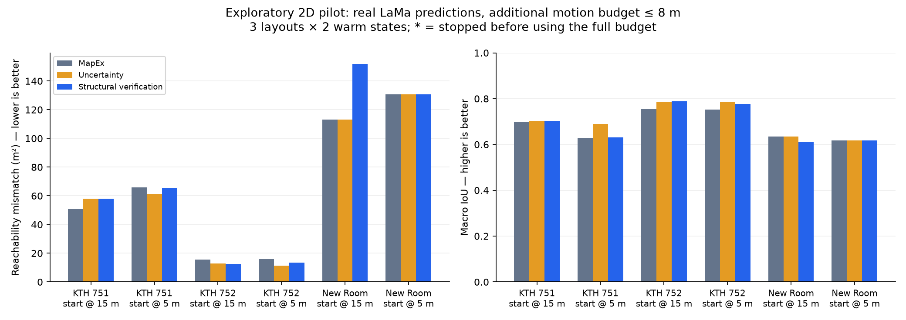
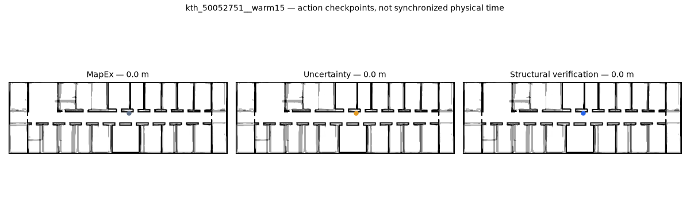
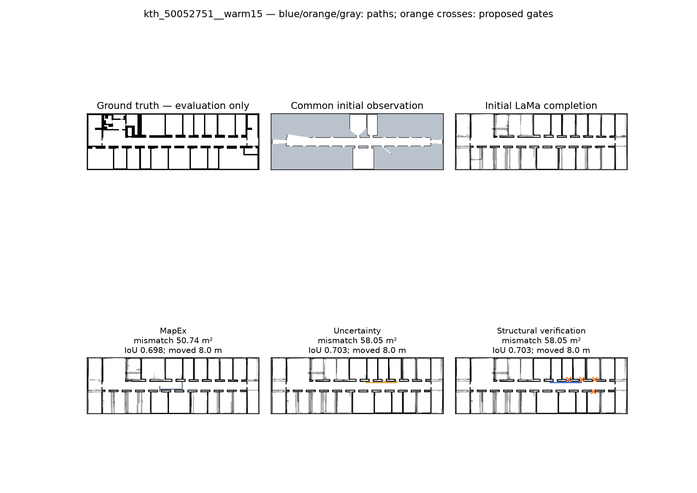
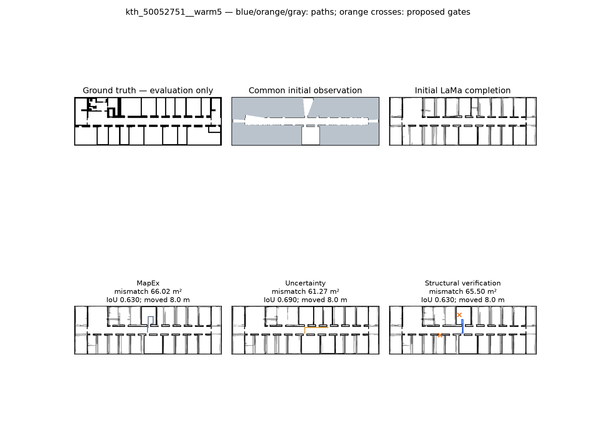
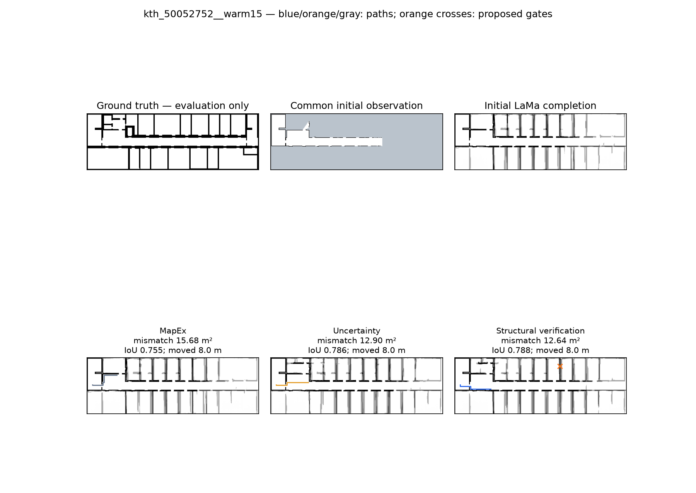
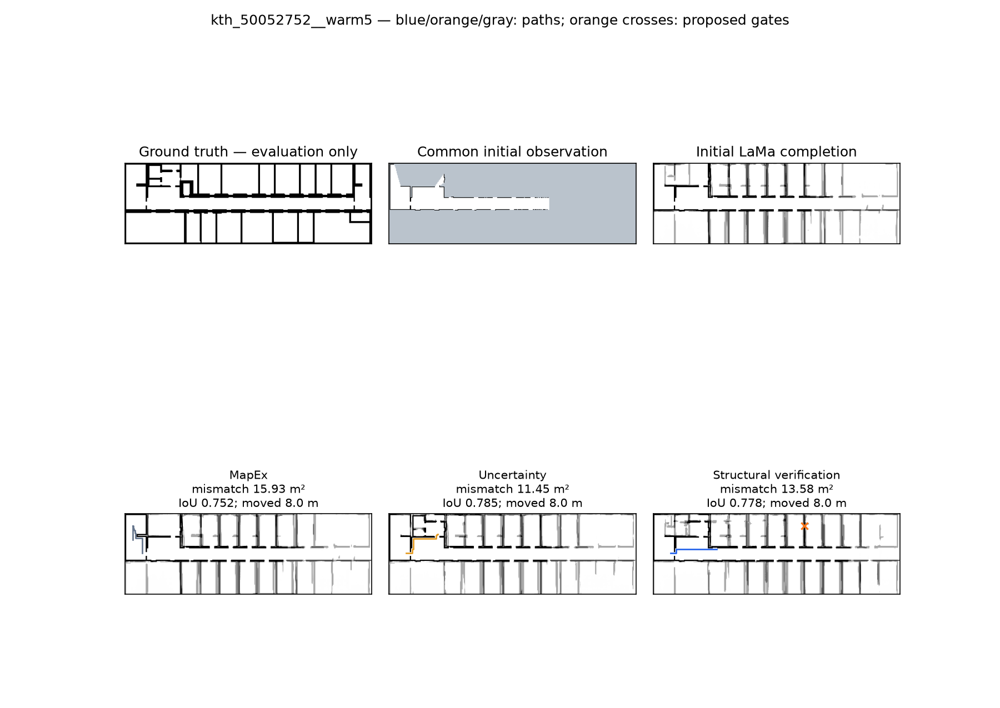
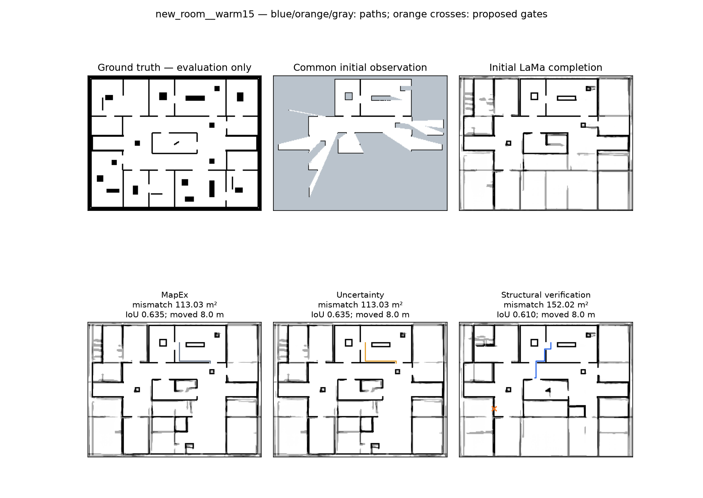
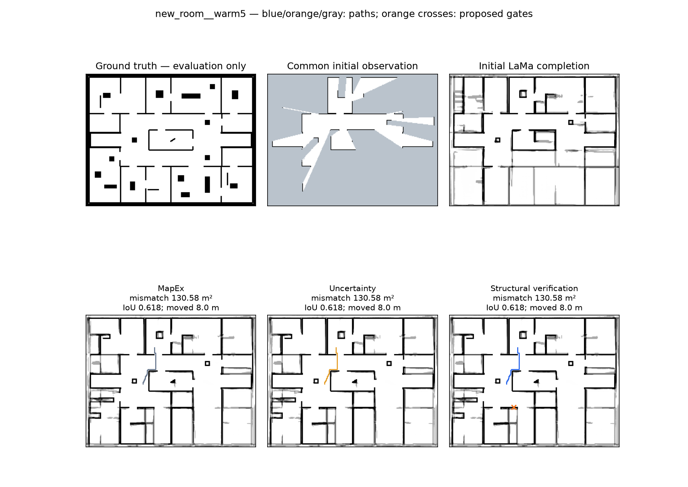

Real LaMa ensemble. Ideal 2D sensing and localization. No operational STOP policy. Six states from three layouts; this is development evidence.


| Case | Method | Distance | Termination | Mismatch m² | Macro IoU | Verify actions |
|---|---|---|---|---|---|---|
| new_room__warm5 | mapex | 7.999999999999988 | DISTANCE_BUDGET | 130.58 | 0.6184757988344685 | 0 |
| new_room__warm5 | uncertainty | 7.999999999999988 | DISTANCE_BUDGET | 130.58 | 0.6184757988344685 | 0 |
| new_room__warm5 | structural | 7.999999999999988 | DISTANCE_BUDGET | 130.58 | 0.6184757988344685 | 1 |
| new_room__warm15 | mapex | 7.999999999999988 | DISTANCE_BUDGET | 113.03000000000002 | 0.6347582533621189 | 0 |
| new_room__warm15 | uncertainty | 7.999999999999988 | DISTANCE_BUDGET | 113.03000000000002 | 0.6347582533621189 | 0 |
| new_room__warm15 | structural | 7.999999999999988 | DISTANCE_BUDGET | 152.02000000000004 | 0.6097605973910591 | 1 |
| kth_50052751__warm5 | mapex | 7.999999999999988 | DISTANCE_BUDGET | 66.02000000000001 | 0.6297316408852113 | 0 |
| kth_50052751__warm5 | uncertainty | 7.999999999999988 | DISTANCE_BUDGET | 61.27000000000001 | 0.6895351664519017 | 0 |
| kth_50052751__warm5 | structural | 7.999999999999988 | DISTANCE_BUDGET | 65.50000000000001 | 0.6301229276140652 | 2 |
| kth_50052751__warm15 | mapex | 7.999999999999988 | DISTANCE_BUDGET | 50.74000000000001 | 0.6979663985844679 | 0 |
| kth_50052751__warm15 | uncertainty | 7.999999999999988 | DISTANCE_BUDGET | 58.05000000000001 | 0.7025983115119551 | 0 |
| kth_50052751__warm15 | structural | 7.999999999999988 | DISTANCE_BUDGET | 58.05000000000001 | 0.7025983115119551 | 4 |
| kth_50052752__warm5 | mapex | 7.999999999999988 | DISTANCE_BUDGET | 15.930000000000003 | 0.7518894260535317 | 0 |
| kth_50052752__warm5 | uncertainty | 7.999999999999988 | DISTANCE_BUDGET | 11.450000000000003 | 0.7851156808023763 | 0 |
| kth_50052752__warm5 | structural | 7.999999999999988 | DISTANCE_BUDGET | 13.580000000000002 | 0.7777430554013709 | 1 |
| kth_50052752__warm15 | mapex | 7.999999999999988 | DISTANCE_BUDGET | 15.680000000000003 | 0.7551912212264003 | 0 |
| kth_50052752__warm15 | uncertainty | 7.999999999999988 | DISTANCE_BUDGET | 12.900000000000002 | 0.7860036236749068 | 0 |
| kth_50052752__warm15 | structural | 7.999999999999988 | DISTANCE_BUDGET | 12.640000000000002 | 0.7880804652893468 | 1 |





